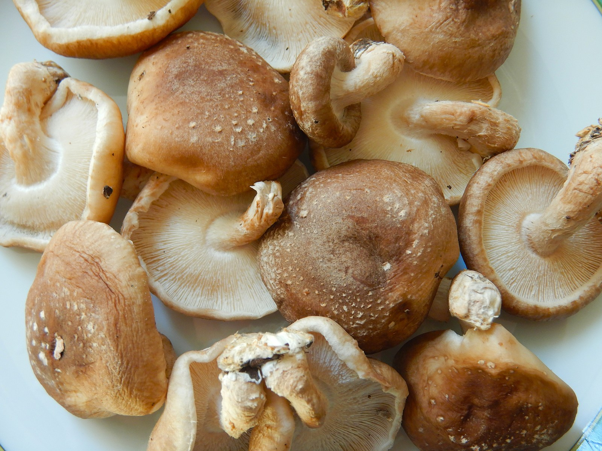

香菇鸡腿饭 32 元/份
去骨鸡腿、香菇、米饭和当天配菜，含米饭。
菜单
下面金额是堂食单份含税价，服务费 0 元，饮用水免费；外带包装费与外送范围待补充。售完的品种在店内菜单上标注，菜单随当天备料更新。
单点米饭 3 元/碗。香菇鸡腿饭与午市单人组合的标价已经含米饭；番茄炖牛腩、时蔬豆腐煲、葱油拌面和当日清炒时蔬按各自菜价点，另加米饭按碗计。
堂食单份含税价，服务费 0 元，饮用水免费。外带包装费与外送范围待补充。
Tomatoes.jpg — Wilfredor (Wilfredo R. Rodriguez H.); https://commons.wikimedia.org/wiki/File:Tomatoes.jpg; CC0 (https://creativecommons.org/publicdomain/zero/1.0/deed.en); full-frame resized/JPEG re-encoded derivative.
Funghi Shiitake.jpg — Albarubescens; https://commons.wikimedia.org/wiki/File:Funghi_Shiitake.jpg; CC BY-SA 4.0 (https://creativecommons.org/licenses/by-sa/4.0); full-frame resized/JPEG re-encoded derivative. Same source license retained.
Tofu 2.jpg — Tiia Monto; https://commons.wikimedia.org/wiki/File:Tofu_2.jpg; CC BY-SA 4.0 (https://creativecommons.org/licenses/by-sa/4.0); full-frame resized/JPEG re-encoded derivative. Same source license retained.